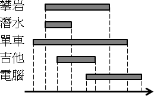
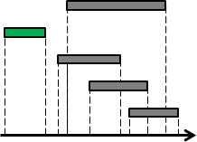
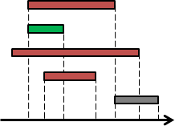
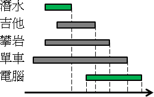

Greedy Method
程度★ 難度★
今朝有酒今朝醉，明日愁來明日愁。《羅隱．自遣》
博觀而約取，厚積而薄發。《蘇軾．稼說送張琥》
Greedy Method
中文譯作「貪心法」，以Incremental Method或Iterative Method來製造答案的方法，大致上分為兩類：
一、填答案（Incremental Method）： 從沒有答案開始，逐步填滿答案， 每次根據現況算出一部分答案，直到答案都填滿為止。 二、改答案（Iterative Method）： 先隨便弄個答案，逐步修飾答案， 每次根據現況修飾一部分答案，直到答案夠漂亮為止。
用投機取巧的手段，胡搞瞎搞製造正確答案，實在是太貪心了，故得名「貪心法」。
用Greedy Method設計演算法時的步驟
一、觀察問題特徵，擬定一個填答案、改答案的原則。 二、隨便挑幾個特例，手算一下。如果答案都對，就採用此原則。 （也可以嘗試證明此原則必定正確。） 三、實作程式碼，把答案算出來。
觀察問題所展露的性質，舉幾個單純的例子，根據這些例子，猜測一個簡單的計算方法。若這些單純的例子能算出正確答案，就大膽假設複雜的例子可以用一樣的方式，漸進地算出正確答案。
Matroid
數學領域已經建立一套稱做Matroid的數學模型，用來表達、證明Greedy Method。然而不是每一種Greedy Method都能套用Matroid進行詮釋。Matroid的知識頗為艱深，故此處省略之。
UVa 120 311 410 514 538 668 719 757 10148 10201 10249 10366 10382 10440 10602 10716 10718 10982 ICPC 3752 4788
Activity Selection Problem
程度★ 難度★★
活動選擇問題
暑假到了，有好多好多有趣的營隊可以參加囉！攀岩、潛水、單車環島團、吉他營、電腦營、……，每個營隊都好有趣，好想每個營隊都參加──可是卻有好多營隊的活動期間都互相卡到，沒辦法同時參加。到底要參加哪些營隊活動才好呢？當然是越多種越好！
想法
填答案的原則很簡單：優先選擇最早結束的活動，就能剩下最多時間來安排其他活動。
仔細分成兩種情況進行討論：一種是最早結束的活動，與其他活動的時間不重疊；另一種是最早結束的活動，與某些活動的時間重疊。
前者的狀況下，參加最早結束的活動，顯然是最理想的──憑空多參加了一個活動，又不耽誤到其他活動。
此觀念可以用Recursive Method詮釋：去除最早結束的活動、遞迴縮小問題。
後者的狀況下，最早結束的活動、以及時間與之重疊的活動當中，只能選擇其中一個參加。此時參加最早結束的活動，得以剩下比較多的時間，仍是最理想的。
此觀念可以用Recursive Method詮釋：去除最早結束的活動、去除因而無法參加的活動，遞迴縮小問題。
演算法
以填答案的視角，重新詮釋方才的想法：
所有活動按照結束時間排序，依序參加活動。如果時間允許就參加，如果時間衝突就不參加。
UVa 10020 ICPC 4328 5105
Change-Making Problem
程度★★ 難度★★
找錢問題
你去商店買東西，你掏出了一張百元鈔票，買了一包23元的零食。櫃員須找錢給你，但是你希望櫃員找給你的硬幣數目越少越好，如此口袋會輕一點。那麼櫃員會給你幾個硬幣呢？
演算法（Cashier's Algorithm）
演算法非常直覺。填答案的原則：先找給你面額較高的硬幣。
時間複雜度是O(N)，N是銅板種類。
UVa 166
適用情況（Pearson's Algorithm）
現實生活中，錢幣面額是經過精心設定的，可以安心使用Cashier's Algorithm。
不幸的消息是，並不是任意一種面額組合，都可以使用Cashier's Algorithm。要使用Cashier's Algorithm，得先經過驗證才行：
一、各種價錢都能找，不會有找不出來的情況。 二、錢幣用量真的是最少的。
時間複雜度是O(N^3)。
【問題描述】
一組錢幣面額 (c1, c2, ..., cn)，幣值大小順序是 c1 < c2 < ... < cn。
找出不適用貪心法的最小價位 M。也就是 1 ~ M-1 用貪心法是對的。
正確湊得 M 的最少錢幣用量為 (b1, b2, ..., bn)，稱呼為正確湊法 b 或者 b(M)。
貪心湊得 M 的最少錢幣用量為 (g1, g2, ..., gn)，稱呼為貪心湊法 g 或者 g(M)。
【性質甲】正確湊法有最佳子結構（包含關係）
若湊法 x 已經是最佳解，
則比 x 小的 y 統統都是最佳解（x >= y，每一個對應項都是大於等於）。
最短路徑截一段還是最短路徑的意思。
【性質乙】貪心湊法是嚴格遞增函數（字典順序關係）
貪心湊法當中，價錢較大的湊法，字典順序會大於價位較小的湊法。
（以高項次代表高位數。）
也就是說 g(X) 函數嚴格遞增，而 b(1 ~ M-1) = g(1 ~ M-1) 也是嚴格遞增。
【性質丙】b(M) 與 g(M) 剛好不相交
b(M) AND g(M) EQUAL (0, 0, 0, ...., 0)
b(M) 和 g(M) 對應的項不會同時有值，因為拿掉這些錢幣，M 就可以更小，矛盾。
這個性質不會用到。
【證明開始】
令 s 是 b(M) 最小的非零項索引值，t 是 b(M) 最大的非零項索引值。
也就是 b(M) = (0, ... , 0, bs, ... , bt, 0, ... , 0)，
bs 與 bt 都大於零，bs 的左邊都是零，bt 的右邊都是零。
【證明步驟一】M 之下限
貪心湊法總是由較大的面額開始湊。
湊 M 出錯的時候，一定是拿了比 ct 更大的面額來湊。
所以 M 至少會有 ct+1 那麼大。M >= ct+1。
【證明步驟二】M 之上限
正確的湊 M 不會用到 ct+1，正確的湊 (M - cs) 當然也不會用到 ct+1。【性質甲】
湊 (M - cs) 時貪心也會對。【M的前提】
貪心湊法總是由較大的面額開始湊。
沒有用到 ct+1，表示 (M - cs) 太小了，所以 (M - cs) < ct+1。
（也可以推得 (M - ct) < ct+1 ，不過他比較寬鬆，用不到。）
【證明步驟三】觀察 (ct+1 - 1) 的湊法。使用夾擠。
M > (ct+1 - 1) >= (M - cs) 【步驟一二】
g(M) > g(ct+1 -1) >= g(M - cs)，如果 g(M) 是對的湊法。【性質乙】
但是事實上 g(M) 是不對的，所以只好改成相似的：
b(M) > g(ct+1 - 1) >= b(M - cs)
【步驟三補充】證明 b(M) > g(ct+1 - 1 - ct) 在第 t 項加一
因為 b(M - ct) = g(M - ct) > b(ct+1 - 1 - ct) = g(ct+1 - 1 - ct)
剛好 ct 是最大的非零項，所以會滿足【逆向性質甲】，故在第 t 項加一即得證。
剛好 ct 是最大的非零項，也滿足貪心湊法的規則，
所以 g(ct+1 - 1 - ct) 在第 t 項加一，就正是 g(ct+1 - 1) 了。
【證明步驟四】
b(M) 與 b(M - cs) 幾乎一樣。【性質甲】【M的前提】
b(M) = ( ..., 0 , gs , ... , gt, 0 , ... )
> g(ct+1 - 1) = ( ???, ? , gs - 1, ... , gt, 0 , ... )
>= b(M - cs) = ( ..., 0 , gs - 1, ... , gt, 0 , ... )
g(ct+1 - 1) 被夾在中間，根據字典順序關係【性質乙】，從第 s 項以上都是確定值。
反過來說，求出 g(ct+1 - 1)，就可以嘗試推理出 b(M) 和 b(M - cs) 的值。
【演算法】
M = +oo
for i = 1 to n
算 g(ci+1 - 1) = b(ci+1 - 1)。 // 一定是對的湊法。
for j = 1 to i // 窮舉第 s 項的位置。
算 b(X)，讓 g(ci+1 - 1) 第 j-1 項以下都變成零，讓第 j 項加一，即得。
算 X。
算 g(X)。
if g(X) 與 b(X) 的錢幣用量相同（項次不同沒關係）
X可以湊出正確值，不是我們要的。不做任何事。
else
更新 M，M = min(M, X)。
return M
Bridge and Torch Problem
程度★ 難度★★★
過橋問題
月黑風高的夜晚，有一座不長不短的獨木橋，只能同時容兩人併行。
此時正好有四個寂寞難耐、悲苦淒涼，事實上是窮極無聊的四個人路經此地。他們手邊僅帶著一支手電筒，想要通過這危險的獨木橋。那橋下可是暗潮洶湧，一失足便成千古恨，奔流到海不復回。
幸好四人閒閒沒事就常走這座橋，對路況簡直熟悉到不行，閉著眼睛走都可以，於是乎四人知道自己過橋分別需時1分鐘、2分鐘、5分鐘、10分鐘。但是不管他們的腳程不可思議的快、莫名其妙的慢，四人都是貪生怕死之徒，手上沒有握著手電筒的話，誰都不敢過橋；四人也都是視財如命之徒，就是誰也不想浪費錢，去附近的便利商店買支手電筒，寧可摔到水裡隨波逐流環遊世界去。
最後他們只好協議說，一次兩人同時持手電筒過橋，再請其中一人送回手電筒，沒事做的人就在橋邊哭爹喊娘等手電筒回來，如此一來四人最終都能夠順利過橋。
兩人同時過橋時必須配合走得慢的人的速度，請問全員過橋最快要多久時間？有一些規矩你是知道的，例如不能把手電筒用丟的丟過河，不能四個人疊羅漢一起過橋，不能把橋拆了做木筏之類的。
演算法
腳程快的人送手電筒回來那是最好的；相對地，腳程慢的人就應該讓他留在彼岸不要回來。不管先走後走，人人都還是要過橋，所以先試試看把腳程最慢的人送到對岸吧！
當人數眾多，至少四人時，令A與B是最快與次快，C與D是次慢與最慢。讓最慢的兩個人過橋主要有兩種方式，第一種是AB去A回、CD去B回，第二種是AD去A回、AC去A回， 至於其它方式所花的時間恰好跟這兩種方式一樣。採用比較快的那一種方式，讓最慢的兩個人過橋之後，問題範疇就縮小了。
時間複雜度是排序腳程快慢以及掃描一次所有數據所需的時間。
UVa 10037
Dutch National Flag Problem
程度★ 難度★★
Single Machine Scheduling,
Minimize the Number of Late Jobs（1||ΣUi）
程度★★ 難度★★★
問題
有一位苦命上班族，要馬上處理臨時指派的N份工作。經驗老到的他，馬上就精準的估計出每份工作各要花掉多少時間，可是每份工作都有不同的完工期限，這造成有些工作可能會來不及完成。他做事專心，要求品質，一次只處理一份工作，一份一份接著做；來不及完成的工作，乾脆放棄不做。
請找出一種排程，讓如期完成的工作最多（也就是讓逾期完成的工作最少）。
合理解之相鄰兩兩交換性質
一個合理排程，其中某兩個如期完成的工作A與B，A早做B晚做，B緊接A之後做。如果A的期限較晚，B的期限較早（與A期限相同也無妨），則A與B對調位置之後，仍會是一個合理排程。證明如下：
一、A與B交換，把A與B視作一體，其他工作的起始時間和結束時間皆不受影響。
二、考慮A放到B的位置：A的期限比B還晚，B都能如期完成了，所以A也能如期完成。
三、考慮B放到A的位置：B提早做，更能如期完成。
有了此性質，不管是哪一種合理排程，都可以經過相鄰兩兩交換，形成一個照期限排序的合理排程。也因此，我們可以先將所有工作按照期限排序，然後依此順序加入排程，是有機會求得合理結果的。
註：不相鄰則不可貿然交換。
UVa 10026 ICPC 3277
演算法（Moore-Hodgson Algorithm）
可以找出其中一種合理排程，而且還是總工時最短的排程。
時間複雜度為O(NlogN)，為一次排序的時間，加上維護Priority Queue的時間。
1. 完工期限由小到大排序。 2. 逐一把工作加入排程。 每次加入工作後，一旦發現逾期，立即從排程當中抽掉工時最長的工作。 3. 排程當中的工作，作為如期完成的工作。 中途抽出來的工作，則不做。（或者作為逾期完成的工作，排在所有工作之後。）
在步驟2.當中， 令目前加入排程的工作有N個，目前仍留在排程裡的工作有M個。 排程所記錄的工作，隨時都會是前N個工作的最佳解。也就是說： α. 前N個工作當中，能如期完成的工作數目，最多就是M。 β. 目前的排程，是前N個工作當中，完成M個工作，總工時最短的排程。 γ. 排程裡的工作們，每一件工作都保持如期完成。
使用數學歸納法證明，只提重點。第N+1個工作加入排程，有兩種情形。
一、沒有發生逾期（即是如期）：
M個工作是總工時最短的，加入一個成為M+1個，依然是總工時最短，αβγ都成立。
二、發生了逾期，立即抽出工時最長的工作：
剛加入工作但還未抽出工作時，此時總工時已經最短了，卻還是逾期，無法增加M，因此α成立。
一加一抽後，仍是M個工作，但是總工時必會盡力下降（可能不變，如果抽出的是第N+1個工作），β成立。
新加入的工作，因為期限排序，其期限更晚，又加上總工時盡力下降，所以新加入的工作能夠如期完成；原來的M-1個工作們，本來就能如期完成，抽出一個工作後，更能如期完成了。因此M個工作都可以如期完成，γ成立。
UVa 10154
2-Machine Flowshop Scheduling（F2||Cmax）
程度★★ 難度★★
問題
兩台機器，N份工作，一台機器一次只能處理一個工作。每份工作必須先經過初號機處理一段時間，再經過貳號機處理一段時間，才算處理完畢。
請找出一種排程，迅速完成所有工作。
演算法（Johnson's Rule）
時間複雜度O(NlogN)，取決於排序的時間。
1. 建立兩個空的List，叫做L1和L2。 2. 從N個工作、2N個工時當中，不斷挑出工時最短的工作。 如果最短工時是初號機的工時，該工作加到L1後端。 如果最短工時是貳號機的工時，該工作加到L2前端。 3. L1 L2，即是排程。
1. 建立兩個空的List，叫做L1和L2。 2. 對每一個工作，若初號機工時小於貳號機工時，該工作加到L1，反之則加到L2。 3. L1照初號機工時由小到大排序。 L2照貳號機工時由大到小排序。 4. L1 L2，即是排程。
【待補證明】
UVa 11269 11729